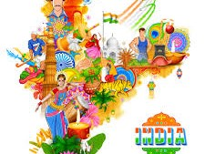

Culture plays an important role in the development agenda of any nation. It represents a set of shared attitudes, values, goals and practices. Culture and creativity manifest themselves in almost all economic, social and other activities. A country as diverse as India is symbolized by the plurality of its culture. The mandate of the Ministry of Culture revolves around the functions like preservation and conservation of our cultural heritage and promotion of all forms of art and culture, both tangible and intangible. Our task is to develop and sustain ways and means through which the creative and aesthetic sensibilities of the people remain active and dynamic. Our functional spectrum is wide, ranging from generating cultural awareness at grassroots level to promoting cultural exchanges at international level.
India is known for diversity in the region, diversity in languages, diversity in food, diversity in clothing, diversity in the festival, diversity in states, diversity in everything that represents the world, country and its people. India, our country is a huge and beautiful land full of wonders. From the Himalayas to the Indian Ocean, Desert of Thar in the snowy mountains of Sikkim, it is a country full of beautiful landscapes and beautiful people. India is a unique country with diversity. "Unity is diversity" is the main slogan of the country. India is a country of the republic that is for the people, by the people and by the people. People run their county, people choose their own leader, and people are independent of everything. India is a country where people are changed according to their location. Each state has its incredible beauty of heritage as well as the nation. Each state has its own history of religion. The oceans bathing its shores on three sides and the mighty Himalayas to the north have given my country natural boundaries. Once again, the attraction of the mountain has attracted many adventures to this land of rich culture. India is rich in dialects and languages. Twenty-two languages constitutionally enjoy official language status, but Hindi is recognized as the lingua franca of the nation. From Kashmir to Kanyakumari and from Nagaland to Mumbai, Hindi is understood as the national language of India. Although different regions have different regional affiliations, they are all Indian. People are called Bihari , Punjabi, Kashmiri, Marathi, Gujarati, but they are proud to say that they are Indians. Indian dance and theatre are brilliant examples of unity in diversity. The country is full of tribal dances, folk dances, and classical dances of great virtuosity. They are considered as the mode of aesthetic expression but they all symbolize India. The expression is different but the theme is the same. We are proud of our cultural distinctiveness. We are proud to be the inhabitants of India. It is our responsibility to maintain its unique characteristic. We should think beyond petty interests and work for the broader goals of prosperity and progress in society.